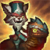
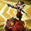

Manual de Noxus
Um guerreiro tão destemido quanto irascível, o yordle Kled representa a bravata furiosa de Noxus. Ele é um ícone amado pelos soldados do império, rejeitado por seus oficiais e abominado pela nobreza. Muitos dizem que Kled lutou em cada batalha que as legiões travaram, que "adquiriu" cada título militar e que nunca recuou de uma luta.

